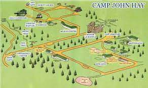
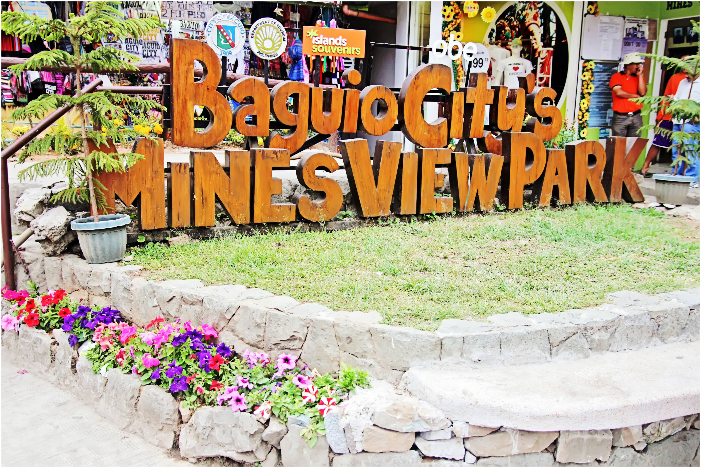
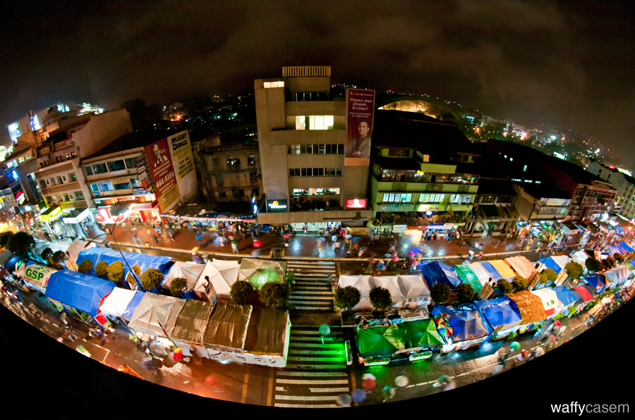
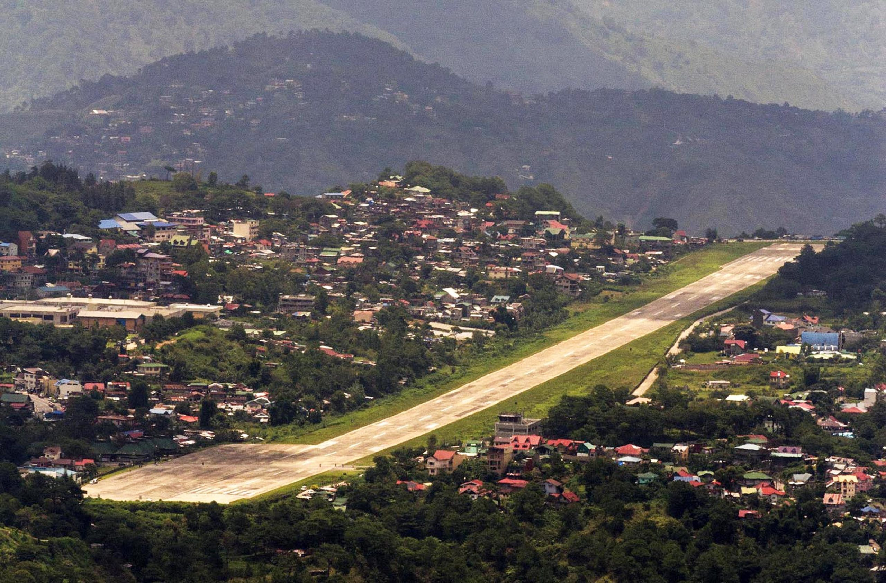

Tourist attractions
Baguio has always been one of the top destinations in the Philippines. Because of its chilly temperature, pine-dominated landscapes, and overall romantic atmosphere, this mountain city has attracted tourists especially in summer and the holidays like Christmas and New Year.
Tourist attractions
- Camp jhon hay
- Camp John Hay is a mixed-used development which serves as a tourist destination and forest watershed reservation in Baguio, Philippines which was formerly a military base of the United States Armed Forces.

- Mines view
- In the park is an Observation Deck that will enable the tourists to take an astonishing panoramic view that overlooks the mining town of Itogon which hosts the used to be a gold and copper mines of Benguet Corporation. A glimpse of the Amburayan Valley can also be witnessed at the view deck.

- Session Road
- Session Road marks Baguio's center of commercial activity. It is home to many savvy restaurants, bars, surplus boutiques (ukay-ukay), hotels, bakeries, movie houses, and drugstores.

- Loakan airport
- Baguio City a small city but also have an airport but Loakan airport was closed to commercial flights over a decade ago because of the reported difficulty in the landing of the aircrafts during bad weather condition but the same remains open to chartered and military flights.
